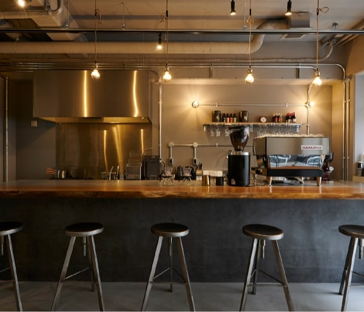
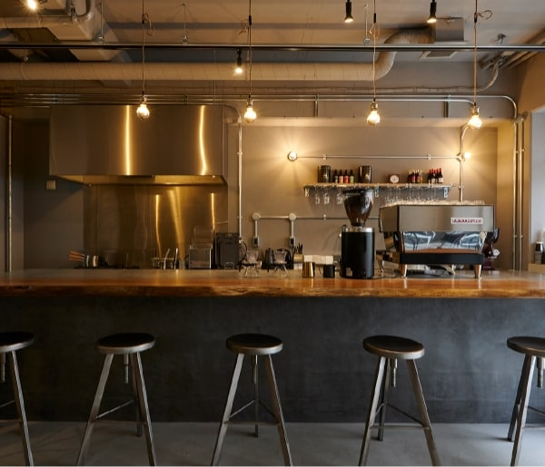

 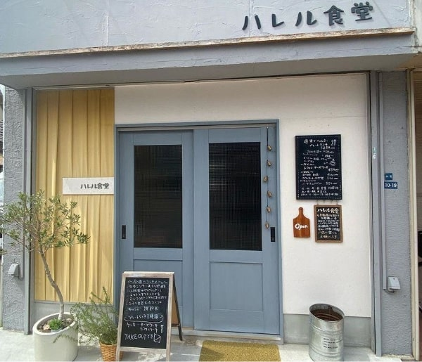
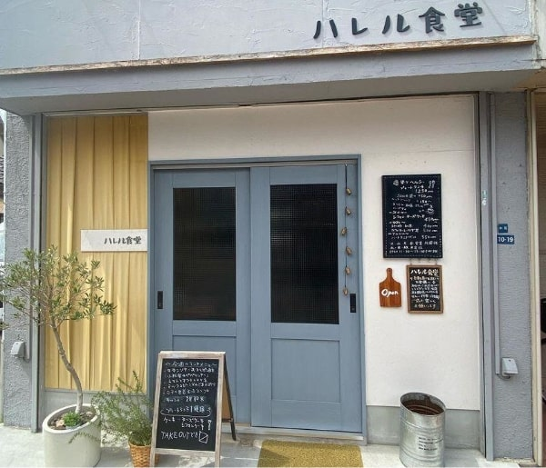

子育て家族に優しい街、門真。
新しい街区の周辺には、認定こども園や小・中学校が点在。
また、門真市保健福祉センターには子育て世帯に嬉しい施設も充実しています。
地域子育て支援センター ＜ひよこテラス・ひよこる〜む＞
-
働きながら安心して子どもを育てられるまち
門真市保健福祉センター（約500m／徒歩7分）にある「ひよこる〜む」は、就学前の子どもとその保護者が、気軽に集まって、親子の交流・育児について話し合える地域子育て支援拠点。同じお部屋には、妊娠期から子育て期までの心配ごとや悩みごとについて相談できる「子育て世代包括支援センターひよこテラス」も併設されています。
-
提供写真
・子育て情報の発信 ・親子の交流 ・育児相談 ・親子イベントの開催 ・子どもの遊び場 など
-
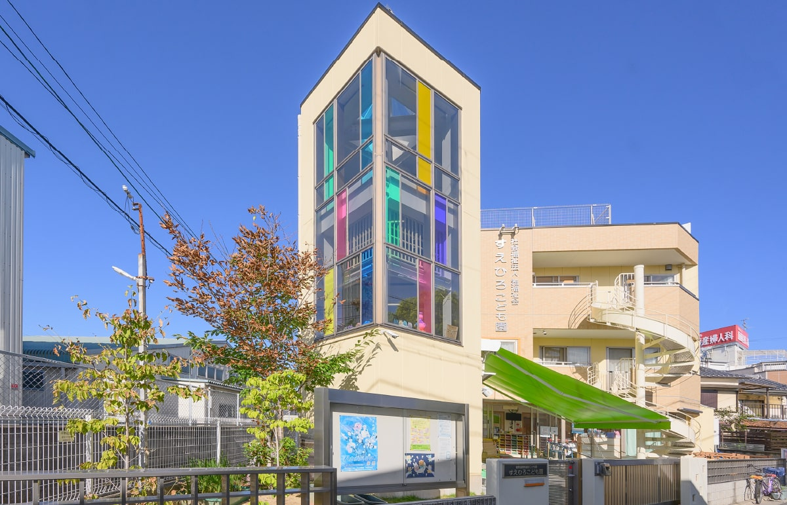
すえひろこども園【認定こども園】（約440m／徒歩6分）
-
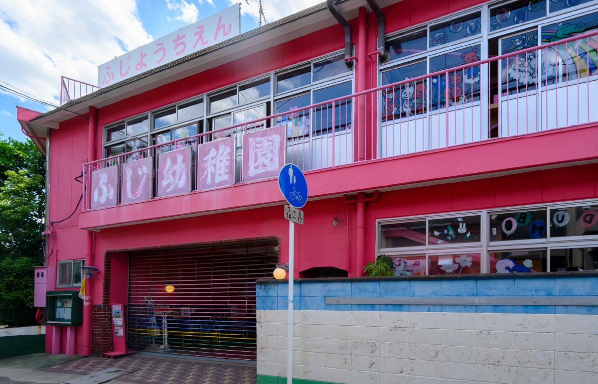
ふじ幼稚園【認定こども園】（約810m／徒歩11分）
-
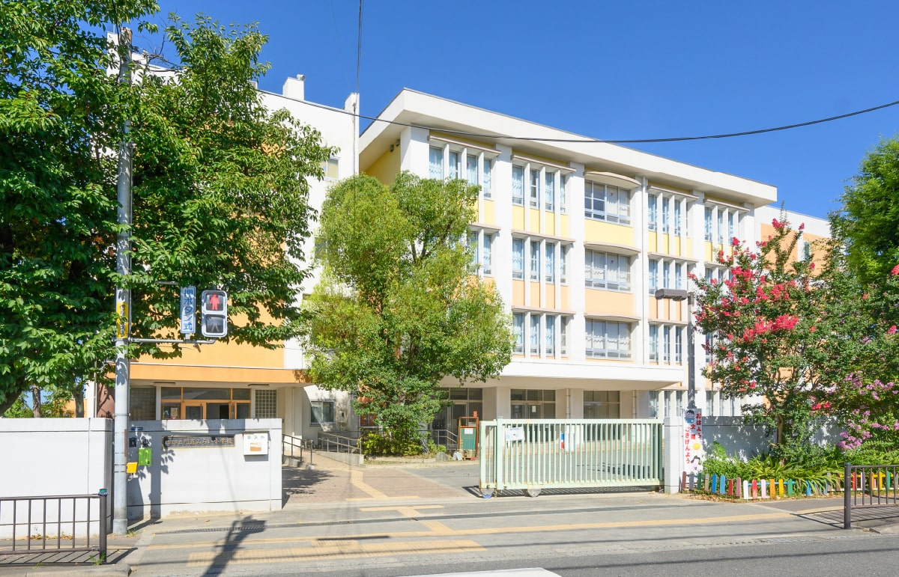
門真みらい小学校【通学区】（約730m／徒歩10分）
-
門真はすはな中学校【通学区】（約520m／徒歩7分）
 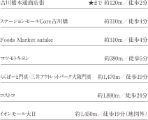
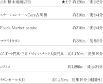
 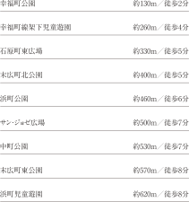
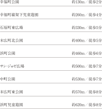
 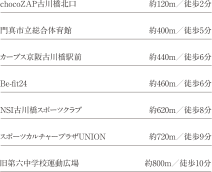
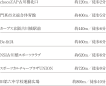
 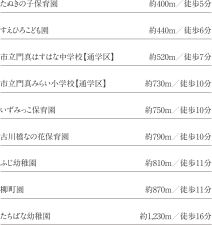
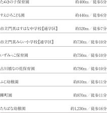
 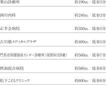
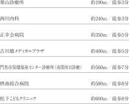
 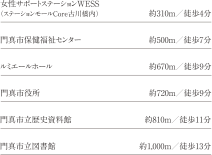
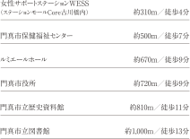